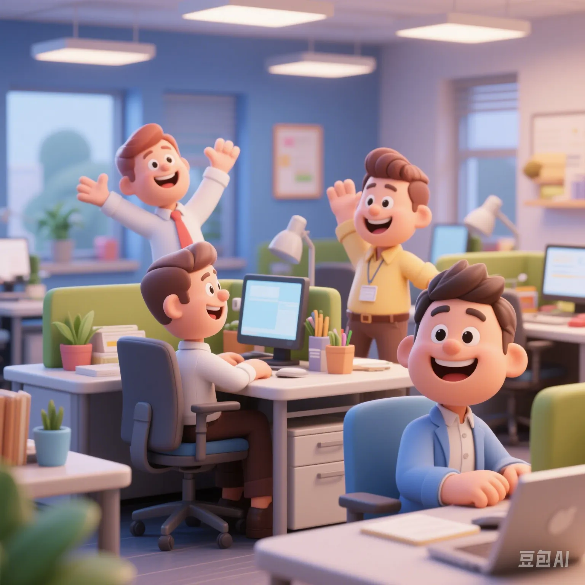

2025 Global Work Satisfaction Data Map: Where Is the Happiest Place to Work?
PeaceLove.Top Insights :2025-04-17
—— "Competition" doesn't equal happiness? The code for workplace happiness is being rewritten.
🌍 Who Is "Happily Working"? The Global Satisfaction Ranking Is Revealed
In 2025, the feelings of workplace people towards work are becoming increasingly polarized. Based on a survey involving 480,000 people from 32 countries around the world, we've compiled the following satisfaction rankings:
Global Top & Bottom 5 in Work Satisfaction
| Rank | Country/Region | Average Satisfaction (out of 5) | Proportion of High - Satisfaction (Score ≥ 4) |
|---|---|---|---|
| 1 | Norway | ⭐️⭐️⭐️⭐️⭐️ 4.7 | 83% |
| 2 | Switzerland | 4.6 | 79% |
| 3 | New Zealand | 4.5 | 76% |
| 4 | Canada | 4.4 | 73% |
| 5 | Netherlands | 4.3 | 71% |
| ... | ... | ... | ... |
| 28 | India | 3.1 | 34% |
| 29 | Brazil | 2.9 | 29% |
| 30 | China | 2.8 | 27% |
| 31 | South Korea | 2.6 | 23% |
| 32 | Japan | 2.3 | 18% |
Highlight: Nordic countries remain the "paradise for workers", while East Asian countries are "under great pressure".
🧠 What Affects the "Work - Happiness Index"?
Analysis of the weight of the top 5 influencing factors:
| Factor | Weight in Satisfaction | Remarks |
|---|---|---|
| Work - life balance | 32% | Flexible working hours and annual leave systems are crucial. |
| Compensation and benefits | 27% | Not just salary, housing subsidies, insurance, equity, etc., are also important. |
| Relationship with supervisor/colleagues | 17% | A good team is the "life - saving water" for workers. |
| Growth and promotion opportunities | 13% | Positions without career paths are called "dead - ends in the workplace". |
| Corporate culture and values | 11% | Young people especially value "doing meaningful things". |
🏢 Comparison Chart of Satisfaction in Different Industries
| Industry | Average Satisfaction | Typical Feedback |
|---|---|---|
| Education and Research | 4.2 | "Not wealthy, but spiritually fulfilled." |
| IT and Internet | 3.7 | "Flexible and high - paying VS overtime anxiety." |
| Medical and Health | 3.5 | "High pressure, but high social recognition." |
| Finance and Insurance | 3.2 | "High salary, high competition." |
| Manufacturing and Logistics | 2.8 | "Physical labor + regular overtime." |
| Retail and Catering | 2.6 | "Unstable, low pay, and heavy emotional labor." |
🔍 Hot - Word Cloud of Chinese Workers' Voices
"Anxiety", "Struggle", "Afraid to take leave", "Change careers", "Side jobs", "Just having a job is okay", "Remote work dream shattered", "Boss is too competitive", "Lying flat", "Persona collapse".
🧭 Comparison of Satisfaction between Young and Middle - Aged/Old Workers (in China)
| Age Group | Average Satisfaction | Typical Feedback |
|---|---|---|
| 18 - 29 years old | 2.6 | "Dreams turn into reality, but reality is not sweet." |
| 30 - 45 years old | 2.9 | "Heavy responsibilities, little freedom." |
| 46 - 60 years old | 3.3 | "Stability is the most important, don't ask for too much." |
✨ Conclusion: Where Is the "Happy Working Planet"?
Work is not just a means of making a living but also a part of life. In the future, "workplace happiness" will no longer be determined by salary but by "whether you are respected", "whether you can be self - consistent", and "whether you are willing to get up and go to work in the morning".